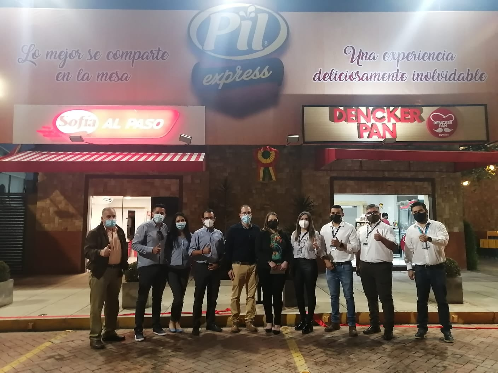
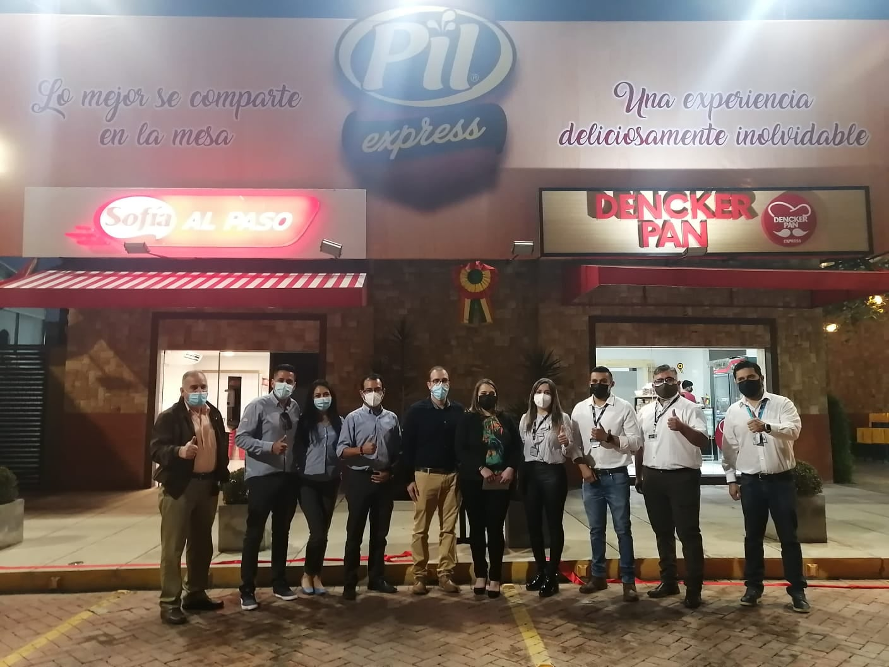

Somos una empresa innovadora en el área de panificación, con el principal objetivo de satisfacer las necesidades y deseos de nuestros clientes y consumidores.
Cachito el Panadero empezó a principios del 2010, como una empresa panificadora de alto nivel. Hasta ahora Cachito el Panadero penetró el mercado cochabambino con la mas alta calidad en Panadería, Pastelería, Salteñería y Pizzería. Actualmente Cachito el Panadero es una de las mejores panificadoras llenando espectativas de la clientela.

üçûNos pueden encontrar en tiendas de barrio y supermercados de Cochabamba.
üçûNuestras sucursal 1:Av. Am√©rica entre Melchor P√©rez de Olgu√≠n y Lola Taborga de Requera.
üçûNuestras sucursal 2: Irigoyen entre Yuqui y Juan de la Rosa N¬∞1951 (Pil Express)
para Cochabamba:
üçû+591 76911000
üçû+591 70714241